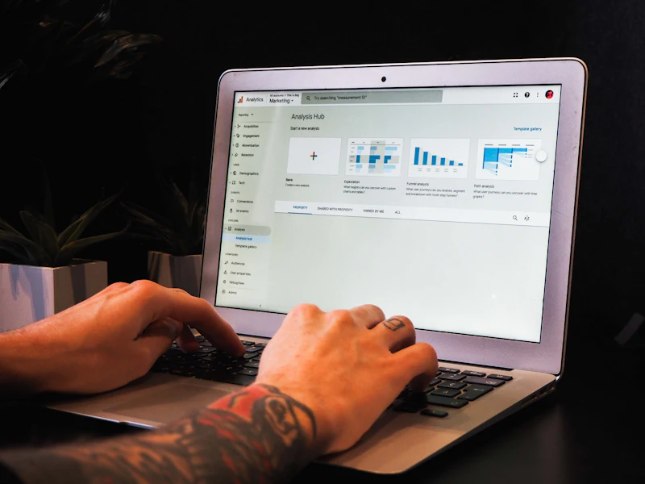

Vergütungsplanung
Budgetrahmen und Vorschläge der Führungskräfte an einem Ort.
Ablauf ansehenGehaltsrunde 2027
Für Personalleitungen im Mittelstand: die Gehaltsrunde in einer Software planen und freigeben statt in zwanzig Tabellen.
Vergütungsplanung
Budgetrahmen und Vorschläge der Führungskräfte an einem Ort.
Ablauf ansehen
„Aus drei Wochen Tabellenabgleich wurden zwei Tage.“
Anna Beispiel
Leitung Personal (Beispiel)
Entscheidungen ohne Rätselraten: eine Plattform, die Vergütungsplanung für alle Beteiligten verständlich macht.
Kein Abgleich mehr zwischen Tabellen und Mails. Alle sehen denselben Stand, bis zur Freigabe.
Verbindet sich mit den Systemen, die Sie schon haben (Beispiele für Schnittstellen)
Legen Sie fest, wie viel je Bereich zur Verfügung steht. Führungskräfte sehen ihren Rahmen, nicht den der anderen.
Jede Stelle liegt im Band. Abweichungen nach oben und unten fallen sofort auf, bevor sie Fragen auslösen.
Vorschläge gehen durch die Stufen, die Sie festlegen. Wer was gesehen und entschieden hat, bleibt nachvollziehbar.
Bevor etwas feststeht, sehen Sie die Folgen für Gesamtkosten und Abstände im Team.
Ein Bericht für die Geschäftsführung, ein Gespräch mit dem Betriebsrat, ein Stand für alle: aus denselben Zahlen.




„Gehälter in Echtzeit anzupassen hat viel verändert. Wir sind sicher, dass wir fair vergüten.“
„Die Führungskräfte planen selbst, wir prüfen nur noch. Die Runde war zum ersten Mal vor dem Stichtag fertig.“
„Im Gespräch mit dem Betriebsrat konnten wir jede Zahl zeigen. Das hat Vertrauen geschaffen.“
Kurze Beiträge zu Planung und Transparenz. Titel und Zahlen sind Beispiele.
3 WochenDauer, Beispiel
5 StufenFreigabe, Beispiel
1 QuelleWahrheit, Beispiel


Beispiel: Vorschaubilder, die Videos werden im Projekt eingebunden.
Beispielantwort: Für den Start brauchen wir Ihre Gehaltsdaten als Datei und eine Absprache zu den Freigabestufen. Danach ist die erste Planung in der Regel nach wenigen Wochen möglich. Den genauen Zeitplan nennen wir in der Demo.
Beispielantwort: Die Daten liegen auf Servern in Deutschland. Rollen legen fest, wer welche Zahlen sieht, eine Führungskraft zum Beispiel nur ihren Bereich. Einzelheiten stehen im Vertrag zur Auftragsverarbeitung (je Anbieter zu prüfen).
Beispielantwort: Wir binden gängige Abrechnungssysteme über Schnittstellen oder Dateien an. Welche genau, klären wir vor dem Start mit Ihnen.
Beispielantwort: Der Preis richtet sich nach der Zahl der Mitarbeitenden. Nach der Demo bekommen Sie ein Angebot mit allen Posten, ohne versteckte Gebühren (Konditionen je Anbieter festzulegen).
Beispielantwort: Nein. Freigabestufen und Fristen richten Sie so ein, wie Ihre Runde heute läuft. Verbessern können Sie später, Schritt für Schritt.
In 30 Minuten sehen Sie Ihre Gehaltsrunde in der Software, mit Beispieldaten Ihrer Größe. Wir melden uns innerhalb eines Werktags mit einem Terminvorschlag.